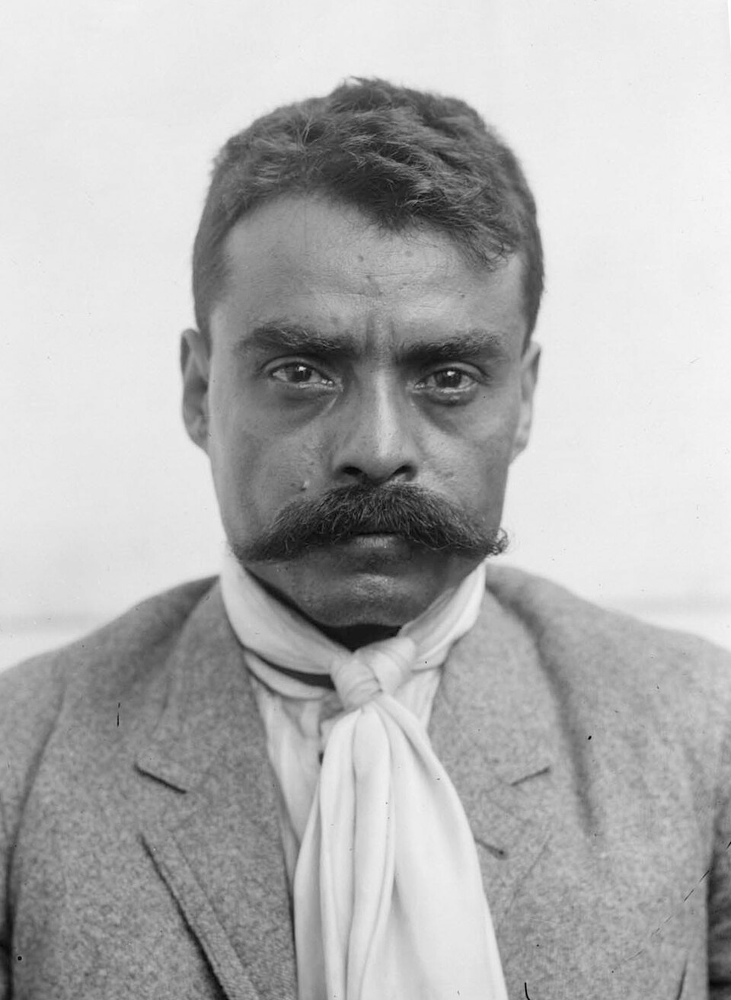

Emiliano Zapata cae acribillado en Chinameca por las tropas que fingían pasarse a su bando
El coronel Jesús Guajardo, que simuló sublevarse contra el gobierno, citó al jefe suriano en la hacienda y ordenó a su guardia presentarle armas. Al toque de clarín, los fusiles dispararon sobre él a quemarropa. El cuerpo fue llevado a Cuautla.

Pasadas las dos de la tarde, Emiliano Zapata cruzó a caballo el portón de la hacienda de San Juan Chinameca, en tierras de Ayala, donde el coronel Jesús Guajardo lo esperaba con honores. La guardia formada presentó armas y un clarín tocó tres veces, como para saludar al jefe. Al apagarse la última nota, los mismos fusiles que lo honraban se inclinaron y dispararon a quemarropa. Zapata cayó del caballo sin tiempo de desenfundar, deshecho a balazos, y con él cayeron algunos de los pocos hombres que lo acompañaban. Todo duró lo que dura una descarga: unos cuantos segundos de fuego y después el silencio.
La celada venía tejiéndose desde hace semanas. Guajardo, oficial de las fuerzas del general Pablo González, hizo saber al jefe suriano que estaba dispuesto a pasarse a la causa del Plan de Ayala con hombres, armas y parque. Para probar su sinceridad llegó a batir una guarnición del gobierno, y apenas ayer obsequió a Zapata un caballo alazán. Hombres del sur aseguran que el caudillo desconfiaba y tomó sus precauciones, pero la promesa de municiones pesó más: sus tropas las necesitan con urgencia. Esta mañana aceptó la invitación a comer en el casco de la hacienda y entró casi solo, con una escolta corta.
Zapata era, desde hace casi una década, la encarnación misma de la demanda agraria. Alzado porque la revolución triunfante tardaba en devolver las tierras a los pueblos, proclamó en noviembre de 1911 el Plan de Ayala y no volvió a deponer las armas ante gobierno alguno. Su divisa de «Tierra y Libertad» recorrió el sur entero; su Ejército Libertador repartió campos y resistió campañas enteras de exterminio. Para el gobierno del señor Carranza era el último gran obstáculo en Morelos; para los pueblos, el general que nunca se vendió. Su muerte cierra a traición lo que las armas no pudieron cerrar en el campo.
El cadáver fue cargado a lomo de bestia hasta Cuautla, donde el gobierno lo exhibe para que nadie dude. Ante él desfilan campesinos con el sombrero en la mano, mujeres que rezan en voz baja, fotógrafos que disparan sus placas. Pero en los pueblos de Morelos la incredulidad puede más que la evidencia. Se dice que al muerto le falta una seña que el general tenía en el rostro; se murmura que Zapata era demasiado desconfiado para caer en una trampa así, que habría mandado a otro en su lugar. La gente mira el cuerpo, lo mira largamente, y no quiere ver en él a su jefe.
El general Pablo González anuncia que la muerte de Zapata pacificará por fin el sur, y en los cuarteles se celebra la hazaña del coronel Guajardo, para quien se anuncian ascenso y recompensa. Este diario registra los hechos: hubo una traición, hubo una descarga, hay un cuerpo expuesto en Cuautla. Lo que no puede registrarse todavía es la suerte de lo demás, porque la demanda de tierra que ese hombre encarnó no ha sido enterrada con él. En Morelos, mientras tanto, corre ya de boca en boca una versión más fuerte que todos los partes oficiales: que Zapata no ha muerto, que Zapata no puede morir.